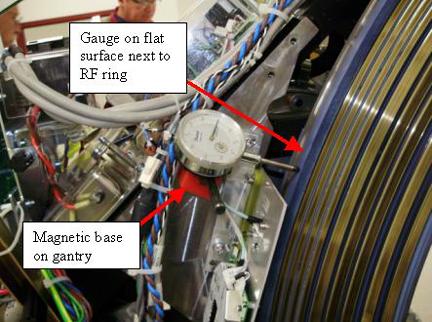

Radial runout is making sure the RF transmission ring is at the same distance from isocenter during rotation. Also can be thought of as making sure the distance from the RF ring to the receiver is constant during rotation.
Illustration 6: Gauge mount example
